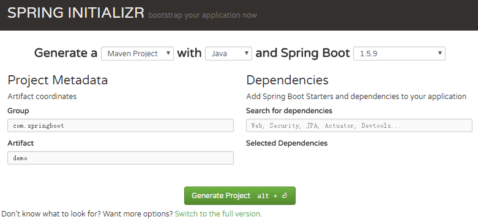
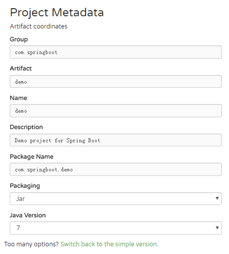
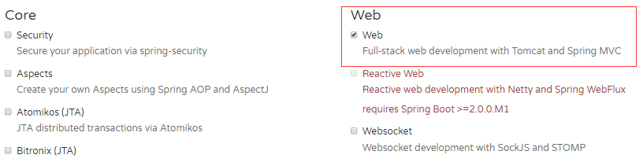
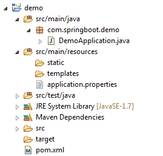
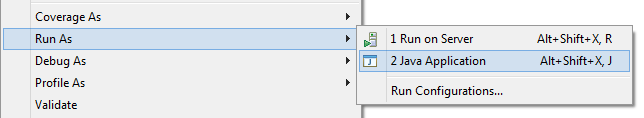
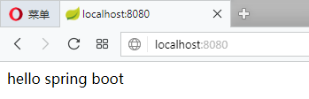
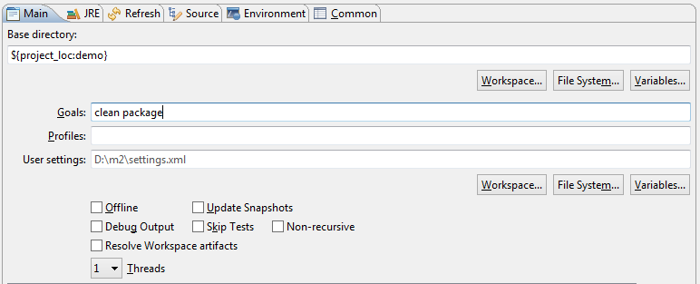
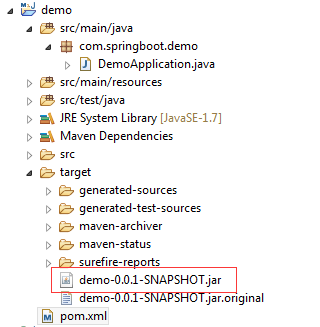
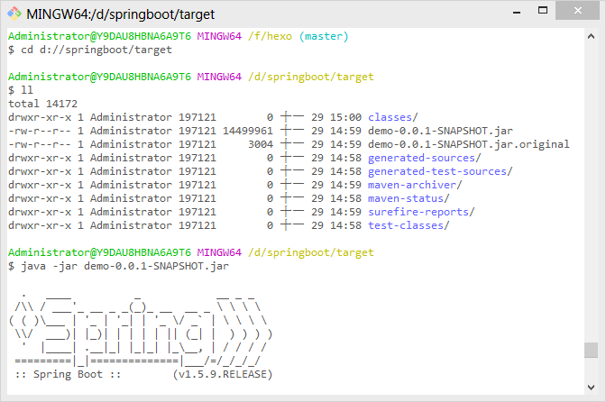

Spring Boot是在Spring框架上创建的一个全新的框架，其设计目的是简化Spring应用的搭建和开发过程。开启Spring Boot有许多种方法可供选择，这里仅介绍使用http://start.spring.io/来构建一个简单的Spring Boot项目。
生成项目文件
访问http://start.spring.io/，页面显示如下：

这里选择以Maven构建，语言选择Java，Spring Boot版本为1.5.9。然后点击Switch to the full version，可看到更多的配置以及依赖选择：

在项目信息里选择以jar包的方式部署，Java版本为7。在页面的下方还可以选择诸多的依赖，这里仅选择web进行演示：

最后点击页面的generate project按钮生成项目文件。文件下载后是一个压缩包，进行解压然后使用eclipse以Maven项目的形式导入。导入后eclipse会自动编译项目并下载相应的依赖，项目目录如下所示：

简单演示
项目根目录下生成了一个artifactId+Application命名规则的入口类，为了演示简单，不再新建控制器，直接在入口类中编写代码：
然后右键点击DemoAppliction，选择run as → Java Application：

访问http://localhost:8080，页面显示如下：

打包发布
在eclipse中右击项目，选择run as → Maven build…，如下图所示：

在Goals中输入clean package命令，然后点击下方的run就将项目打包成jar包（初次打包会自动下载一些依赖）。打包完毕后可看到项目目录target文件夹下生成了一个jar文件：

生成jar包后，cd到target目录下，执行以下命令：

访问http://localhost:8080，效果如上。
聊聊pom.xml
打开pom.xml可看到配置如下：
spring-boot-starter-parent
spring-boot-starter-parent指定了当前项目为一个Spring Boot项目，它提供了诸多的默认Maven依赖，具体可查看目录D:\m2\repository\org\springframework\boot\spring-boot-dependencies\1.5.9.RELEASE下的spring-boot-dependencies-1.5.9.RELEASE.pom文件，这里仅截取一小部分：
需要说明的是，并非所有在<properties>标签中配置了版本号的依赖都有被启用，其启用与否取决于您是否配置了相应的starter。比如tomcat这个依赖就是spring-boot-starter-web的传递性依赖（下面将会描述到）。
当然，我们可以手动改变这些依赖的版本。比如我想把thymeleaf的版本改为3.0.0.RELEASE，我们可以在pom.xml中进行如下配置：
spring-boot-starter-web
Spring Boot提供了许多开箱即用的依赖模块，这些模块都是以spring-boot-starter-XX命名的。比如要开启Spring Boot的web功能，只需要在pom.xml中配置spring-boot-starter-web即可：
因为其依赖于spring-boot-starter-parent，所以这里可以不用配置version。保存后Maven会自动帮我们下载spring-boot-starter-web模块所包含的jar文件。如果需要具体查看spring-boot-starter-web包含了哪些依赖，我们可以右键项目选择run as → Maven Build…，在Goals中输入命令dependency:tree，然后点击run即可在eclipse控制台查看到如下信息：
上述这些依赖都是隐式依赖于spring-boot-starter-web，我们也可以手动排除一些我们不需要的依赖。
比如spring-boot-starter-web默认集成了tomcat，假如我们想把它换为jetty，可以在pom.xml中spring-boot-starter-web下排除tomcat依赖，然后手动引入jetty依赖：
tips：依赖的坐标可以到上述的spring-boot-dependencies-1.5.9.RELEASE.pom文件里查找。再次运行dependency:tree：
可看到tomcat已被替换为了jetty。
spring-boot-maven-plugin
spring-boot-maven-plugin为Spring Boot Maven插件，提供了：
把项目打包成一个可执行的超级JAR（uber-JAR）,包括把应用程序的所有依赖打入JAR文件内，并为JAR添加一个描述文件，其中的内容能让你用
java -jar来运行应用程序。搜索
public static void main()方法来标记为可运行类。